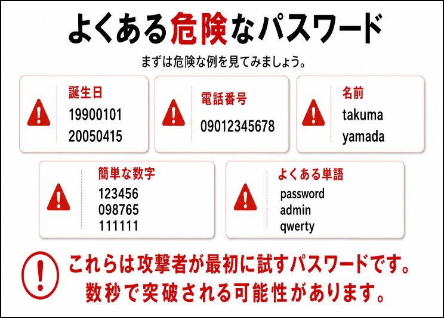

はじめに
インターネットを利用するうえで、多くのサービスで必要になるものがあります。
それがパスワードです。
- メール
- SNS
- ネットショッピング
- 銀行
- 動画配信サービス
ほとんどのサービスでパスワードを設定しています。
しかし、
- 覚えられないから同じものを使う
- 誕生日を使う
- 名前を使う
- 簡単な数字だけにする
という人も少なくありません。
実は、多くの情報漏えいやアカウント乗っ取りは、パスワードが原因で発生しています。
今回は、安全なパスワードの作り方と管理方法について学びましょう。
パスワードは家の鍵と同じ
パスワードを一言で表すなら、
「デジタル世界の鍵」
です。
例えば、自宅の鍵を知らない人に渡したらどうなるでしょうか。
勝手に家へ入られ、
- お金を盗まれる
- 私物を持ち出される
- 部屋を荒らされる
かもしれません。
パスワードも同じです。
知らない人にパスワードを知られてしまうと、
- SNSが乗っ取られる
- メールを盗み見される
- ネットショッピングで勝手に購入される
などの被害が発生します。
だからこそ、パスワードは大切に管理する必要があります。
よくある危険なパスワード

これらは攻撃者が最初に試すパスワードです。
数秒で突破される可能性があります。
なぜ使い回しが危険なのか
多くの人がやってしまうのが、
「同じパスワードの使い回し」
です。
例えば、
- メール
- Amazon
- SNS
- 銀行
すべて同じパスワードだったとします。
もし1つのサービスから情報が漏えいした場合どうなるでしょうか。
攻撃者は、
メールアドレス
＋
流出したパスワード
を使って他のサービスにもログインを試みます。
これを
パスワードリスト攻撃
と呼びます。
実際の攻撃では、
- 漏えいした情報を入手
- 他のサイトへ自動ログイン
- ログイン成功したアカウントを悪用
という流れで被害が発生します。
つまり、
ということです。
実際に起きる被害
パスワードが漏れると次のような被害が発生します。
SNS乗っ取り
勝手に投稿される。
メール乗っ取り
メール内容を見られる。
ネットショッピング
勝手に商品を購入される。
ネットバンキング
不正送金される可能性がある。
クラウドストレージ
写真やファイルを盗まれる。
被害が大きい場合は金銭的な損失にもつながります。
安全なパスワードとは？
安全なパスワードには特徴があります。
長い
短いパスワードは危険です。
おすすめは
12文字以上
です。
可能であれば16文字以上を推奨します。
複雑
次の組み合わせを使います。
- 英大文字
- 英小文字
- 数字
- 記号
例
T!k8@q2#Lz9&
ただし、
覚えるのが大変という問題があります。
おすすめはパスフレーズ
最近は、
長くて覚えやすいパスフレーズ
が推奨されています。
例えば、
BlueCoffeeMorningTrain2026
や
CatLikesFishAndSleepEveryDay
のようなものです。
文章のようにすることで、
- 長い
- 推測しにくい
- 覚えやすい
というメリットがあります。
やってはいけないルール
次のようなルールは避けましょう。
サービス名を付け足すだけ
PasswordAmazon
PasswordGoogle
PasswordFacebook
規則性があるため危険です。
毎回数字だけ変える
Password1
Password2
Password3
これも推測されやすくなります。
メモ帳に保存
パソコンのデスクトップに
password.txt
を置くのは非常に危険です。
パスワード管理ソフトを活用しよう
現在では、
パスワード管理ソフト
を使うのが一般的です。
代表例
- Bitwarden
- 1Password
- KeePass
- Apple パスワード
- Google パスワードマネージャー
これらを利用すると、
- 強力なパスワードを自動生成
- 自動入力
- 安全に保管
が可能になります。
覚えるのはマスターパスワード1つだけです。
多要素認証を設定しよう
現在のセキュリティ対策で非常に重要なのが
多要素認証（MFA）
です。
例えばログイン時に、
- パスワード
- スマートフォン認証
の両方を使います。
攻撃者がパスワードを知っていても、
スマートフォンを持っていなければログインできません。
多要素認証の例
- SMS認証
- 認証アプリ
- 生体認証
- セキュリティキー
特に認証アプリ方式がおすすめです。
パスワードが漏れたか確認する方法
世界中では毎日のように情報漏えいが発生しています。
そのため、
自分のメールアドレスが漏えいしていないか確認することも大切です。
漏えいが判明した場合は、
- パスワード変更
- 使い回しの停止
- 多要素認証の設定
を行いましょう。
今日からできるチェックリスト
以下に当てはまる場合は改善しましょう。
危険
- 同じパスワードを使っている
- 誕生日を使っている
- 名前を使っている
- 8文字未満
- 多要素認証を設定していない
安全
- サービスごとに違う
- 12文字以上
- パスフレーズを利用
- パスワード管理ソフトを利用
- 多要素認証を設定済み
まとめ
今回のポイントを振り返りましょう。
- パスワードはデジタル世界の鍵
- 使い回しは非常に危険
- 漏えいすると複数サービスが被害を受ける
- 長く複雑なパスワードが重要
- パスフレーズがおすすめ
- パスワード管理ソフトを活用する
- 多要素認証を必ず設定する
次回は、
「第4章 あなたは見抜ける？偽メール・フィッシング詐欺入門」
について解説します。
あなたの受信箱にも、すでに偽メールが届いているかもしれません。